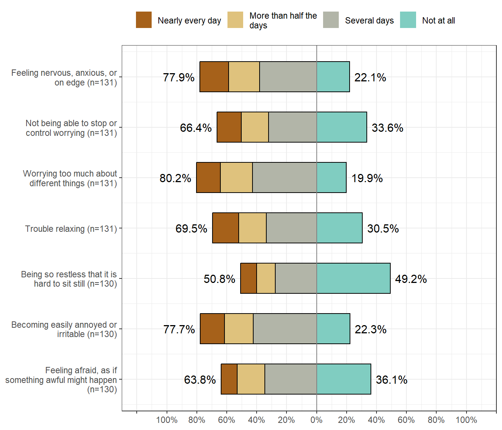
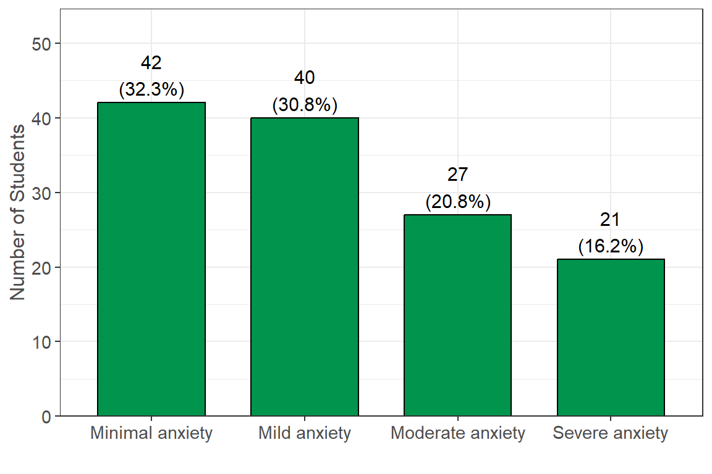
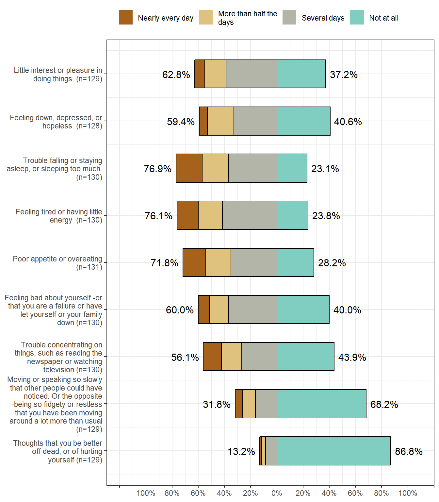
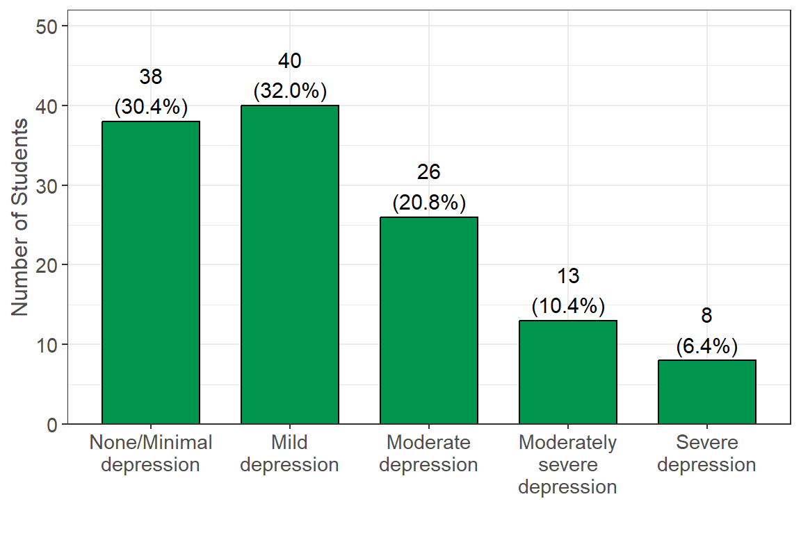
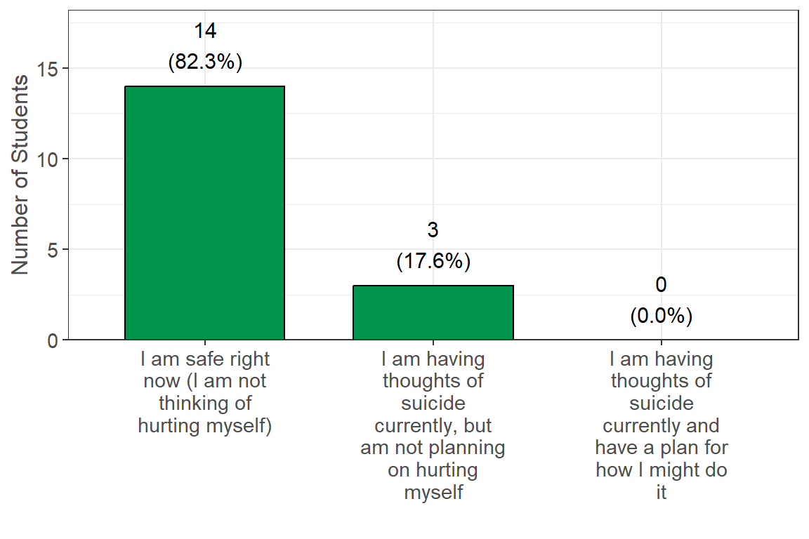
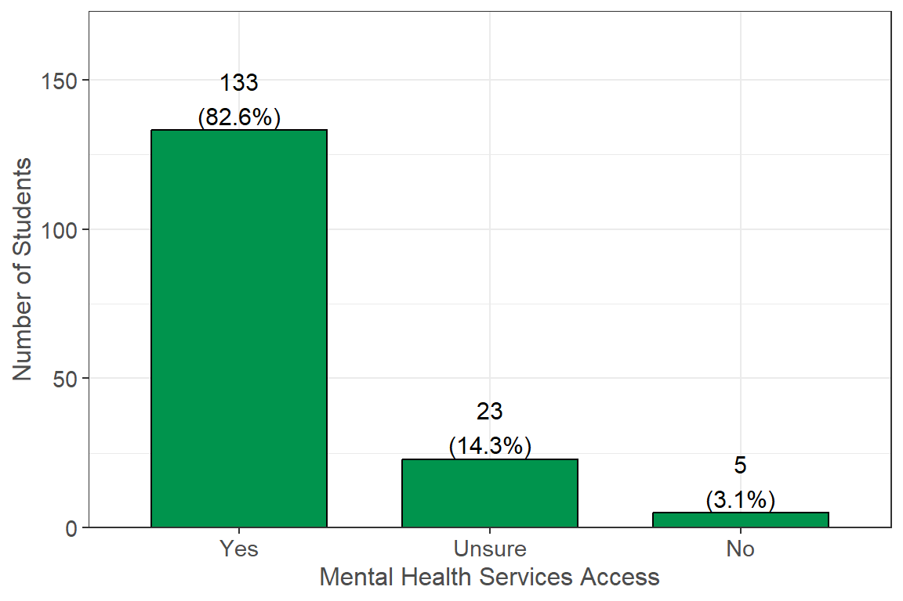
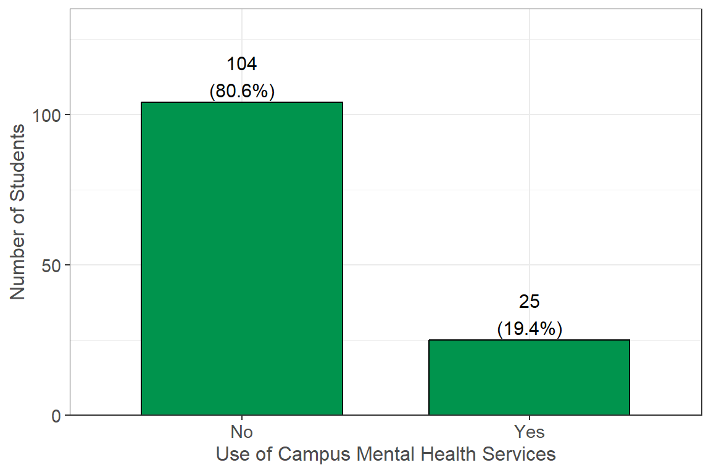
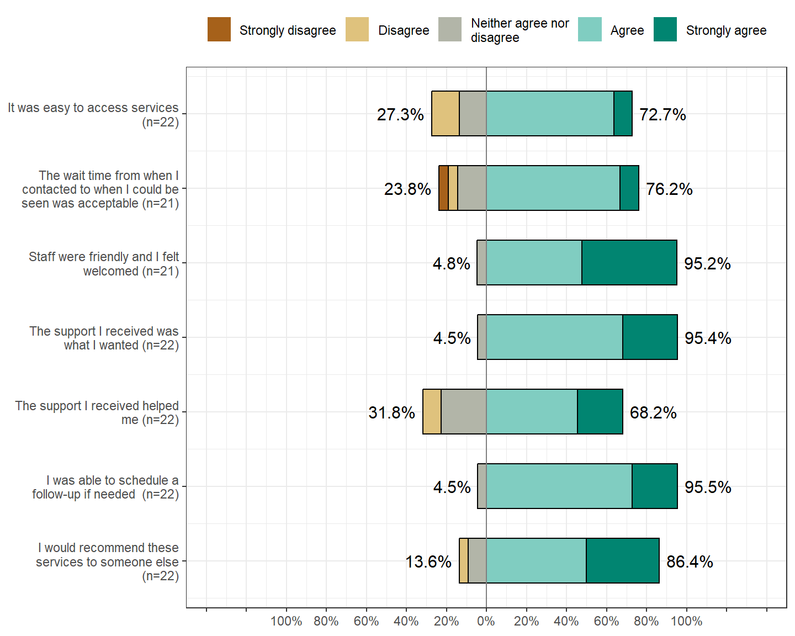

Mental Health
Students were screened for generalized anxiety, depression, and thoughts of suicide. Students were also asked if they had access to mental health services, as well as their experience with and barriers to mental health services on their campus. Please note: All students were shown the following disclaimer before viewing any of the anxiety or depression screening questions and had the option to skip these entire sections:
These next questions are about mental health and suicidal thoughts. Sometimes people feel so depressed about the future that they may consider attempting suicide, that is, taking some action to end their own life. These questions may be upsetting for you, and so we want to be sure that you feel comfortable continuing. Please remember that you may discontinue the survey at any time. Additionally, the following resource is available to you, should you become distressed: National Suicide Prevention Lifeline (1-800-273-8255).
As a reminder, students had the option to select “Prefer not to answer” for all questions, and these responses were set as missing values. In addition, 11 (6.0%) students did not finish the survey. The n reporting refers to the total number of non-missing responses, while the percent reporting reflects the percent of non-missing responses.
Generalized Anxiety
Survey Question: Over the last two weeks, how often have you been bothered by the following problems?1
Additional Notes: These questions (from the validated GAD-7 tool) were used to classify generalized anxiety severity (see Generalized Anxiety Classification).
Summary: Overall, the majority of students responded negatively to all options. Some highlights of the results include the following: In the past two weeks, 102 (77.9%) students have felt nervous/anxious for several days, more than half the days, or nearly every day; 105 (80.2%) students have worried too much about different things for several days, more than half the days, or nearly every day; and 91 (69.5%) students have had trouble relaxing for several days, more than half the days, or nearly every day.
Generalized Anxiety Classification

Survey Question: This variable was created from the questions in the Generalized Anxiety section.
Additional Notes: This variable was created using the validated GAD-7 severity scoring. “Not at all” was scored as 0, “Several days” was scored as 1, “More than half the days” was scored as 2, and “Nearly every day” was scored as 3. Individuals’ scores were added together. Those classified with “Minimal anxiety” had scores of 0-4, “Mild anxiety” had scores of 5-9, “Moderate anxiety” had scores of 10-14, and “Severe anxiety” had scores of 15-21. Anyone who answered “Prefer not to answer” to at least one of the seven questions was not classified.
Summary: A total of 42 (32.3%) students were classified as having minimal anxiety, 40 (30.8%) were classified as having mild anxiety, 27 (20.8%) were classified as having moderate anxiety, and 21 (16.2%) were classified as having severe anxiety.
Depression

Survey Question: Over the last two weeks, how often have you been bothered by the following problems?2
Additional Notes: These questions (from the validated PHQ-9) were used to classify depression severity (see Depression Severity Classification).
Summary: Some highlights of the results include the following: In the past two weeks, 76 (59.4%) students have felt down, depressed, or hopeless for several days, more than half the days, or nearly every day; 100 (76.9%) students have had trouble falling or staying asleep for several days, more than half the days, or nearly every day; 99 (76.2%) students have felt tired or had little energy for several days, more than half the days, or nearly every day; and 17 (13.2%) students have had thoughts that they would be better off dead or had thoughts of hurting themselves for several days, more than half the days, or nearly every day.
Depression Severity Classification

Survey Question: This variable was created from the questions in the Depression section.
Additional Notes: This variable was created using the validated PHQ-9 severity scoring. “Not at all” was scored as 0, “Several days” was scored as 1, “More than half the days” was scored as 2, and “Nearly every day” was scored as 3. Individuals’ scores were added together. Those classified with “None/Minimal depression” had scores of 0-4, “Mild depression” had scores of 5-9, “Moderate depression” had scores of 10-14, “Moderately severe depression” had scores of 15-19, and “Severe depression” had scores of 20-27. Anyone who answered “Prefer not to answer” to at least one of the nine questions was not classified.
Summary: A total of 38 (30.4%) students were classified as having none/minimal depression, 40 (32.0%) were classified as having mild depression, 26 (20.8%) were classified as having moderate depression, 13 (10.4%) were classified as having moderately severe depression, and 8 (6.4%) were classified as having severe depression.
Suicidal Thoughts

Survey Question: Which statement best describes how you are feeling right now?
Additional Notes: Students who reported having thoughts that they would be better off dead or had thoughts of hurting themselves for several days, more than half the days, or nearly every day (see Depression section) were shown this question. All of these students were also sent an automatic email from Qualtrics containing many mental health resources. Students who responded that they were currently having thoughts of suicide and have a plan of how they might do it were immediately taken to a new page displaying the national suicide hotline.
Summary: Of those who had thoughts that they were better off dead or had thoughts of hurting themselves, 14 (82.4%) students reported feeling safe right now; 3 (17.6%) students reported having thoughts of suicide but were not planning on hurting themselves; and none reported currently having suicidal thoughts with a plan for how they might do it.
Mental Health Services - Access

Survey Question: We are interested in understanding your experience with campus-based mental health supports. This might include a counselor, therapist, or group-based counseling. Do you have access to mental health services on your campus?
Summary: A total of 133 (82.6%) students reported having access to mental health services, 23 (14.3%) were unsure if they had access, and 5 (3.1%) reported having no access.
| Reasons: | Yes (%) |
|---|---|
| I'm not sure what these kinds of services are (n = 26) | 19 (73.1%) |
| I don't know what services are available (n = 26) | 15 (57.7%) |
| I don't know where to find information about them, so I'm not sure about what they are (n = 26) | 11 (42.3%) |
| I haven't needed these services, so I haven't looked into them (n = 26) | 5 (19.2%) |
| I haven't heard anyone talking about these services (n = 26) | 5 (19.2%) |
| I don't believe in therapy, so I haven't looked into them (n = 26) | 0 (0.0%) |
Survey Question: What statement(s) best describe why you might feel unsure about your ability to access mental health services on campus? (Please select all that apply)
Additional Notes: This question was displayed only to students who selected “Unsure” or “No” about having access to mental health services (see Mental Health Services Access).
Summary: Of those who were unsure about having or don’t have access to mental health services on their campus, 19 (73.1%) were unsure what these services are, 15 (57.7%) were unsure of what services are available at their campus, and 5 (19.2%) reported not needing these services so they haven’t looked into them.
Mental Health Services - Use

Survey Question: Have you used any of these campus-based mental health services within the last 12 months?
Additional Notes: This question was displayed only to students who selected “Yes” to having access to mental health services (see Mental Health Services Access).
Summary: Of those who reported having access to mental health services on their campus (such as a counselor, therapist, or group-based counseling), 25 (19.4%) reported they have used these services.
| Reasons: | Yes (%) |
|---|---|
| I haven't needed these services (n = 103) | 51 (49.5%) |
| I don't know how to access these services (n = 103) | 27 (26.2%) |
| I don't know what services are available (n = 103) | 23 (22.3%) |
| I'm not sure how to pay for these services or if my insurance covers it (n = 103) | 20 (19.4%) |
| I find support in other places (n = 103) | 19 (18.4%) |
| I had trouble finding the location or getting contact information for these services (n = 103) | 17 (16.5%) |
| I have mental health support off campus (n = 103) | 15 (14.6%) |
| I don't think these services will help (n = 103) | 8 (7.8%) |
| I am embarrassed to say I need help (n = 103) | 7 (6.8%) |
| I cannot afford these services (n = 103) | 4 (3.9%) |
| I couldn't get an appointment (n = 103) | 4 (3.9%) |
| I was afraid others would find out I was seeking help (n = 103) | 2 (1.9%) |
| I don't believe in therapy (n = 103) | 0 (0.0%) |
Survey Question: What best describes your reason(s) for not using campus-based mental health services? (Please select all that apply)
Additional Notes: This question was displayed only to students who reported that they have not used campus-based mental health services (see Mental Health Services Use).
Summary: Of the students who reported they have not used campus-based mental health services, 51 (49.5%) reported that they don’t need these services, 19 (18.4%) reported that they find support in other places, and 27 (26.2%) reported not knowing how to access these services.
Mental Health Counseling
| Services Used: | Yes (%) |
|---|---|
| Counseling (one-on-one) (n = 25) | 22 (88.0%) |
| Counseling (drop-in) (n = 25) | 7 (28.0%) |
| Other support services (n = 25) | 1 (4.0%) |
| Counseling (group) (n = 25) | 0 (0.0%) |
Survey Question: What type(s) of services did you use? (Please select all that apply)
Additional Notes: This question was displayed only to students who selected “Yes” to using campus-based mental health services (see Mental Health Services Use).
Summary: Of those who reported using campus-based mental health services, 22 (88.0%) reported using one-on-one counseling, 7 (28.0%) reported using drop-in counseling, 1 (4.0%) reported using other support services, and none reported using group counseling.

Survey Question: Based on your experiences with one-on-one counseling, please respond to the following statements:
Additional Notes: This question was displayed only to students who reported using campus-based one-on-one counseling (Mental Health Counseling).
Summary: Overall, students who have used one-on-one counseling have had mostly positive experiences. A notable 5 (23.8%) were neutral, disagreed, or strongly disagreed that the wait time to be seen was acceptable; and 7 (31.8%) were neutral or disagreed that the support they received helped them.
Footnotes: